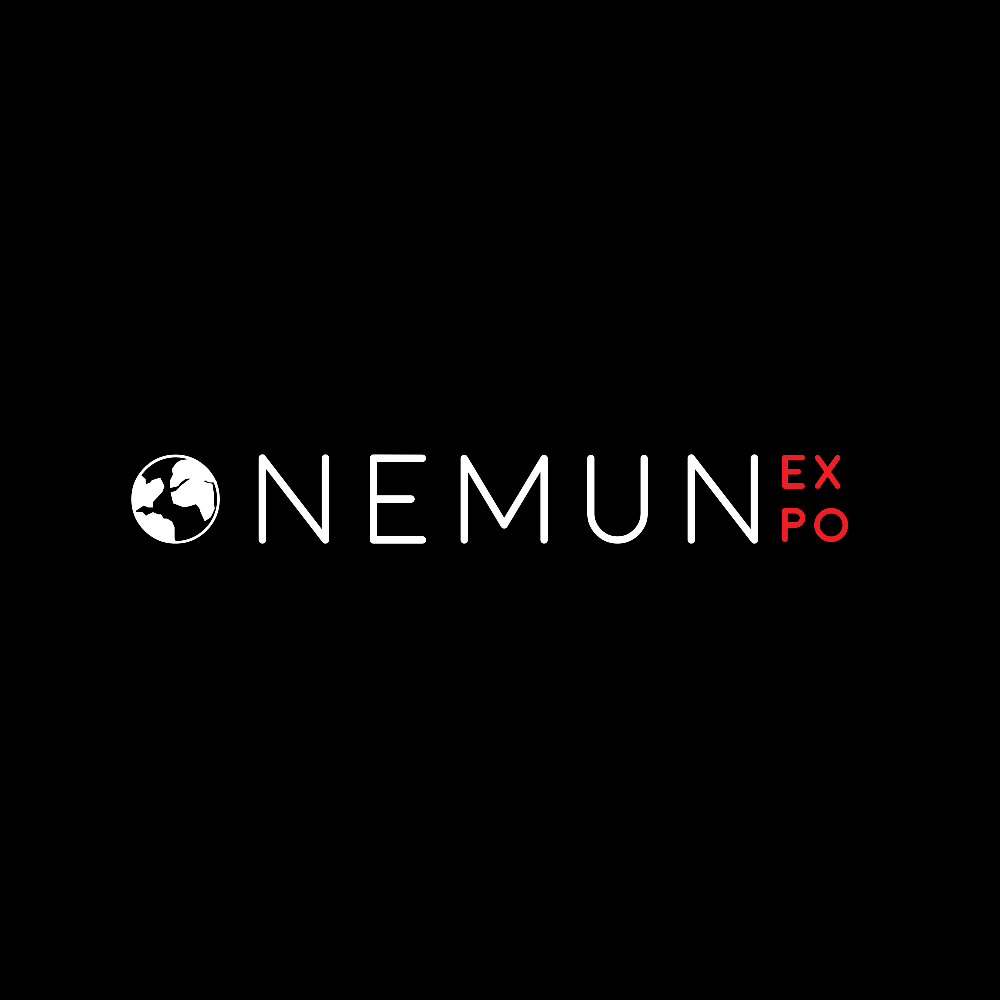
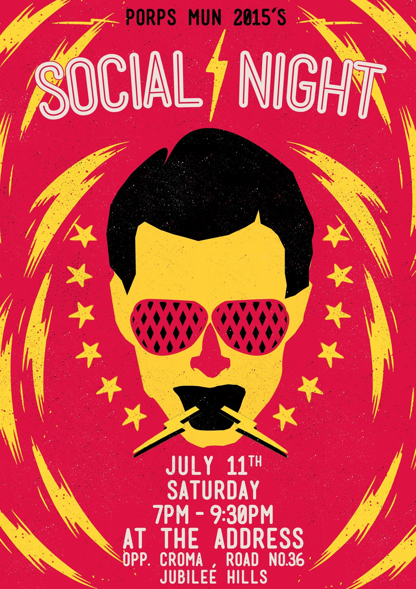

Onemun Expo Branding
December 2 2018

We were approached by the OneMUN group to create their entire Model United Nations campaign for 2017. These are large scale undertakings that span numerous days, and attract students from all over the city in an effort to simulate the debate and politics of the United Nations. Their previous campaign was very vibrant, playful and directed towards kids of all ages. However, this year, their target demographic was high school juniors and seniors, a lot of whom are very experienced with such conferences. Building on that, I sought to communicate the high quality of debate they were aiming for, and establish their place in the Hyderabad MUN Circuit. This required a focal point, something to embody what the brand stood for. In this effort, I illustrated The Eagle, that would serve as ambassador and logo to the entire conference - a symbol of pride, strength and power.
As in the United Nations, even the simulation has a variety of committees - headed by a director and co-director, with representatives of various countries. All of these positions were to be assumed by the participants of the conference, depending on their level of experience. Each committee has a different agenda to resolve, and therefore required its own personality. I created a unique logo, color scheme, and over 600 unique placards from the sample design.
